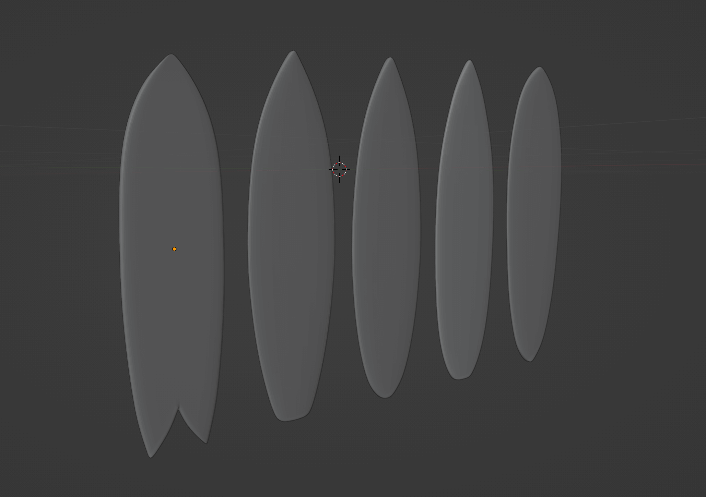

Lycée Jules verne Etaples en WEBVR
Par M GUARIM
A Propos
Mon portfolioPourquoi ai-je choisi le WebVR
Pationné par l'enseignement des nouvelles technologies . En recherche permanante sur les moyens d'utiliser la 3D, du webvr, de la vision par ordinateur en interaction avec le monde réel,
Expériences
J'ai un peu d'expérience en développement, mais je souhaite principalement trouver toutes les applications possibles de ces technologies dans un environnement industriel.
Détourner les différentes technologies (open-vision, webvr, A-frame, arduino) et développer des outils pour l'industrie.
Ma classe de développement de projet: 3Pmet
Les classes de 3e dites "prépa-métiers" ont pour vocation d'accompagner les élèves avec une pédagogie par projet dans la construction de leur d'orientation, en particulier vers la voie professionnelle. L’accent est mis sur la découverte des métiers et des formations, avec notamment des stages d’observation professionnels.
AU PROGRAMME :
Outre les enseignements généraux, 180 heures d’enseignement sont dédiées à la découverte professionnelle des métiers et des formations. À cela s’ajoutent entre 1 et 4 semaines de stages d’observation en milieu professionnel et périodes d’immersion dans les lycées professionnels ou les CFA.
Mon établissement
Le Lycée Professionnel JULES VERNE est situé proche du centre ville d’Etaples et de sa gare .
Le lycée, labellisé « lycée des métiers du bâtiment et des énergies renouvelables »
Membre du CAMPUS des métiers et des Qualifications du Bâtiment et des Systèmes Energétiques Intelligents 3.0 (CMQ BSEI 3.0).
Il promeut et équipe son EIP (Espace d’Innovation Partagée) en outils de réalité augmentée et réalité virtuelle. Des formations sont également assurées à destination des apprentis du CFA et des adultes du GRETA.
L’établissement compte également deux pilotes de drone thermique qui montrent cette technologie à la formation du Titre Pro ITE (Isolation Thermique par l’Extérieur).
♦ La famille des Métiers du Bâtiment, de l’énergie durable et des travaux publics avec la 2nde CDB et ses spécialités.
♦ La famille des métiers de l’Agencement de la Menuiserie et de l’Ameublement avec la 2nde AMA et ses spécialités
♦ La famille des Métiers de la Transition Numérique et Énergétique avec la 2nde TNE et ses spécialités
Les formations initiales proposées vont du CAP au BAC PRO sous statut scolaire et statut d’apprenti du CFA
